เว็บโรงพยาบาลเฉพาะทาง 2 ภาษา
เว็บไซต์ full-stack 2 ภาษาสำหรับโรงพยาบาลเฉพาะทางที่กำลังก่อสร้าง — เล่าเรื่อง pre-opening อย่างสงบและมีศักดิ์ศรี พร้อมระบบรับสมัครงานในตัวที่รับใบสมัคร เก็บเข้า CMS อย่างปลอดภัย และสร้าง PDF ใบสมัครภาษาไทยส่งให้ HR อัตโนมัติ สร้างด้วย Next.js 16, Sanity และ serverless ล้วน
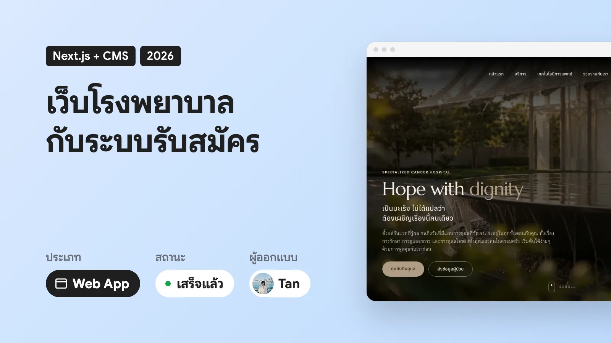
เว็บไซต์ full-stack 2 ภาษา สำหรับโรงพยาบาลเฉพาะทางที่กำลังก่อสร้าง — สื่อสารเรื่องราว pre-opening อย่างสงบและมีศักดิ์ศรี พร้อมระบบรับสมัครงาน (ATS) ในตัว ที่รับใบสมัคร เก็บเข้า CMS แล้วสร้าง PDFใบสมัครภาษาไทยส่งเข้าเมล HR อัตโนมัติ
ปัญหาที่เจอ
ทำเว็บให้โรงพยาบาลที่ "ยังไม่เปิด" — ต้องสร้างความเชื่อใจโดยไม่ขายฝัน และต้องพร้อมรับทีมงานก่อนวันเปิดจริง
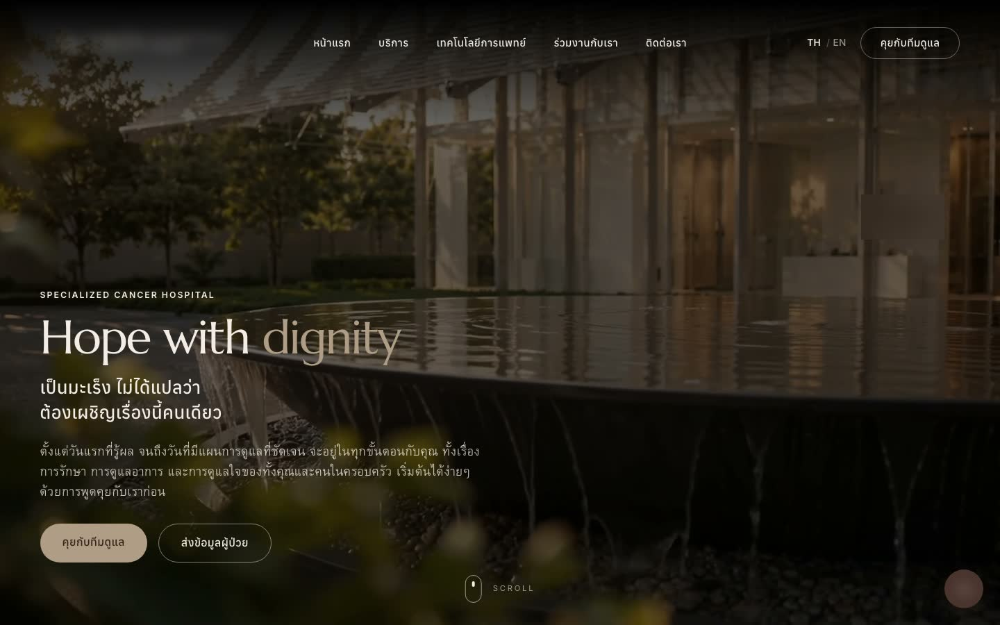
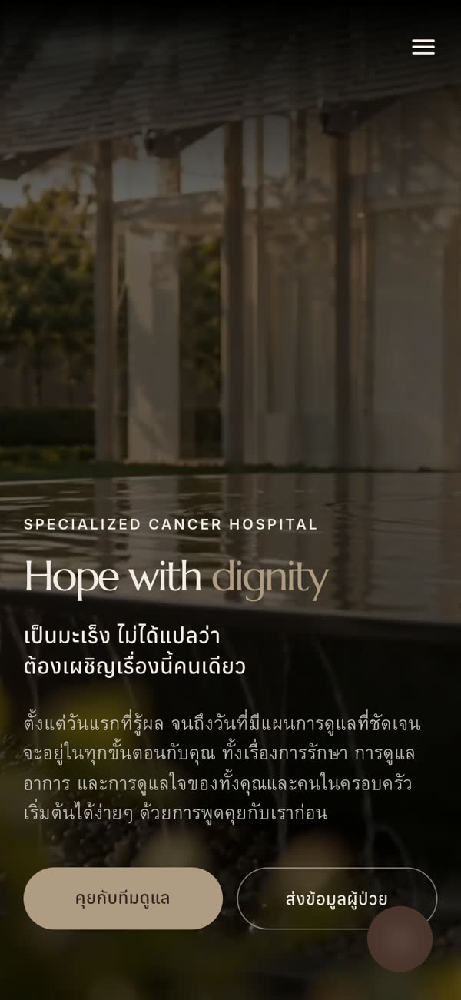
โรงพยาบาลเฉพาะทางด้านมะเร็งกำลังอยู่ระหว่างก่อสร้าง — เว็บต้องไม่ทำเหมือนเปิดเต็มระบบแล้ว แต่ต้องสื่อสารว่า "ที่นี่กำลังจะเป็นที่ที่เข้าใจคุณ" อย่างอบอุ่นและน่าเชื่อถือ ขณะเดียวกันก็ต้องเริ่มรับสมัครทีมแพทย์ พยาบาล และเจ้าหน้าที่ตั้งแต่ก่อนเปิด ทั้งหมดนี้ต้อง deploy ได้เร็ว งบก่อนเปิดจำกัด และดูแลข้อมูลผู้สมัครซึ่งอ่อนไหวให้ปลอดภัย
โรงพยาบาลยังไม่เปิด — สื่อสารยาก
ถ้าทำเหมือนเปิดแล้วจะเสียความน่าเชื่อถือ แต่ถ้าโชว์แค่ "กำลังก่อสร้าง" ก็ดูเย็นชา ต้องบอกความจริงว่ากำลังสร้าง โดยยังทำให้คนรู้สึกว่ามีที่พึ่งกำลังจะมา
ต้องรับสมัครทีมก่อนเปิด แต่ไม่มีระบบ
โรงพยาบาลต้องหาแพทย์/พยาบาล/เภสัชกรตั้งแต่ก่อนเปิด — ถ้าไม่มีระบบ ใบสมัครจะกระจัดกระจายตามอีเมล/แชต ไม่มีที่เก็บกลาง ไม่มีรูปแบบมาตรฐานให้ HR อ่าน
ข้อมูลผู้สมัคร = ข้อมูลอ่อนไหว (PII)
ใบสมัครมีเลขบัตร เบอร์โทร เลขใบประกอบวิชาชีพ ผู้ติดต่อฉุกเฉิน — ถ้าเก็บผิดที่หรือหลุดออก public API มีความเสี่ยงทั้งด้าน PDPA และความไว้วางใจ
2 กลุ่มผู้ชม + แบรนด์เฉพาะตัว
ต้องรองรับทั้งคนไทยและผู้ชมต่างชาติ (แพทย์/พาร์ทเนอร์) และต้องคุมโทนแบรนด์เข้ม — ฟอนต์ไทยแบบไม่มีหัวให้เข้ากับโลโก้ ห้ามใช้กากบาทแดง/ภาษาสู้รบเรื่องมะเร็ง
ต้อง deploy ได้เร็ว งบก่อนเปิดจำกัด
ยังไม่พร้อมตั้ง backend แยก, ยังไม่มีคีย์ CMS/เมลตอนเริ่ม — แต่ต้อง publish เว็บให้ทันเพื่อเริ่มประชาสัมพันธ์และเปิดรับสมัคร ต้องไม่ผูกกับ vendor เยอะจนขยับตัวไม่ได้
วิธีแก้ปัญหา
เว็บ pre-opening ที่ซื่อสัตย์ + ระบบ ATS ในตัว — serverless ล้วน เชื่อม CMS/เมลทีหลังได้โดยเว็บไม่ล้ม
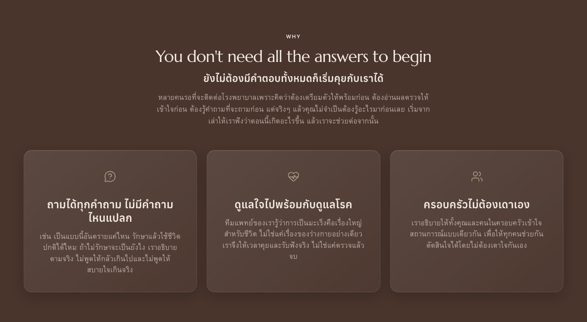
เว็บ pre-opening ที่บอกความจริงอย่างอบอุ่น
Mood แสง–น้ำ–ร่มเงา, motion แบบ "ลมหายใจ" (fade + reveal ช้า ๆ), CTA แบบไม่กดดัน ("คุยกับทีมดูแล" / "ติดต่อรับคำแนะนำ") — สร้างความเชื่อใจโดยไม่ทำเหมือนเปิดแล้ว
ระบบ Careers + ATS ในตัวเว็บเดียว
หน้าประกาศงาน + ฟอร์มสมัครหลายส่วน + เก็บใบสมัครเข้า CMS อัตโนมัติ — HR เปิดดูใน Studio ได้ที่เดียว ไม่ต้องไล่เก็บจากอีเมล/แชตอีก
เก็บใบสมัครเป็น "draft" กัน PII รั่ว
บันทึกเอกสารเป็น draft (drafts.<uuid>) ที่ public API อ่านไม่ได้ แต่ HR เห็นใน Studio + write token เป็น server-only + เก็บเฉพาะฟิลด์ที่จำเป็น
สร้าง PDF ใบสมัครไทยให้ HR อัตโนมัติ
เมื่อมีคนสมัคร ระบบ render หน้าปกใบสมัคร (ภาษาไทยเป๊ะ) ด้วย headless Chrome แล้ว merge กับไฟล์เรซูเม่เป็น PDF เดียว ส่งแนบเข้าเมล HR — พร้อมอ่านทันที
Serverless ล้วน + fallback ทุกจุด
Next.js + Sanity + Resend (เรียกผ่าน fetch ไม่เพิ่ม dependency) — ยังไม่เชื่อม CMS ก็ใช้ seed data, ยังไม่ตั้งเมลก็ตอบสำเร็จแบบ stub เว็บทำงานได้ตั้งแต่ deploy แรก
วิธีทำงาน — 4 จังหวะ (เส้นทางใบสมัคร)
ตั้งแต่ผู้สมัครกดส่ง จนใบสมัคร PDF ถึงมือ HR
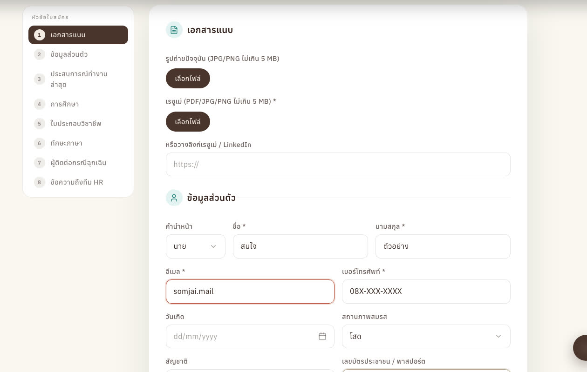

ผู้สมัครกรอกฟอร์ม
ฟอร์มหลายส่วน มือถือเป็น bottom-sheet, มี date-wheel + ครอปรูปในตัว
Validate + เก็บ draft
ตรวจฝั่ง server แล้วบันทึกเป็น draft ใน CMS ที่ public อ่านไม่ได้
สร้าง PDF เบื้องหลัง
headless Chrome render หน้าปก + merge เรซูเม่ (ไม่หน่วงผู้สมัคร)
แจ้ง HR พร้อม PDF
ส่งเมลแนบ PDF + ลิงก์เปิดใน Studio ให้ทีมงานอ่านต่อ
Tech Stack & Architecture
Serverless ล้วน — ไม่มี backend แยก, ไม่มี DB ที่ต้องดูแลเอง, เชื่อม service ทีหลังได้โดยเว็บไม่ล้ม
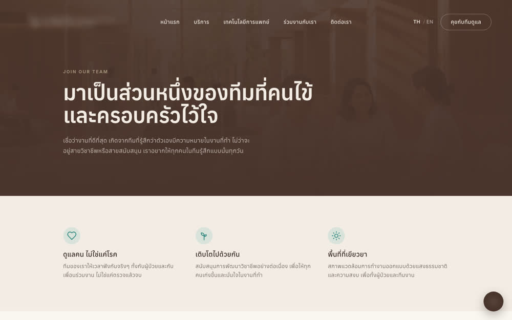

Next.js 16 + RSC — render เนื้อหา 2 ภาษาฝั่ง server ได้เร็วและ SEO ดี, route handlers ทำหน้าที่ API ในตัวเดียวกัน ไม่ต้องมี backend แยก · Sanity CMS — ให้ HR แก้ประกาศงาน/อ่านใบสมัครเองผ่าน Studio ภาษาไทย โดย dev ไม่ต้องแตะโค้ด · next-intl — แยก "ข้อความ" (dictionary) ออกจาก "โครงหน้า" (โค้ด) เพิ่ม/แก้ภาษาไม่กระทบ layout · Puppeteer + pdf-lib — render หน้าปกไทยด้วยเบราว์เซอร์จริงแล้ว merge เรซูเม่ ได้ PDF ที่ตัวอักษรไทยเป๊ะ · Resend ผ่าน fetch — ส่งเมลได้โดยไม่เพิ่ม dependency · ทุก service มี fallback เว็บจึง deploy ได้ตั้งแต่ยังไม่ครบคีย์
สิ่งที่สร้าง — 8 ความสามารถหลัก
ครบตั้งแต่หน้าเว็บสื่อสารแบรนด์ ถึงระบบหลังบ้านรับสมัครงาน
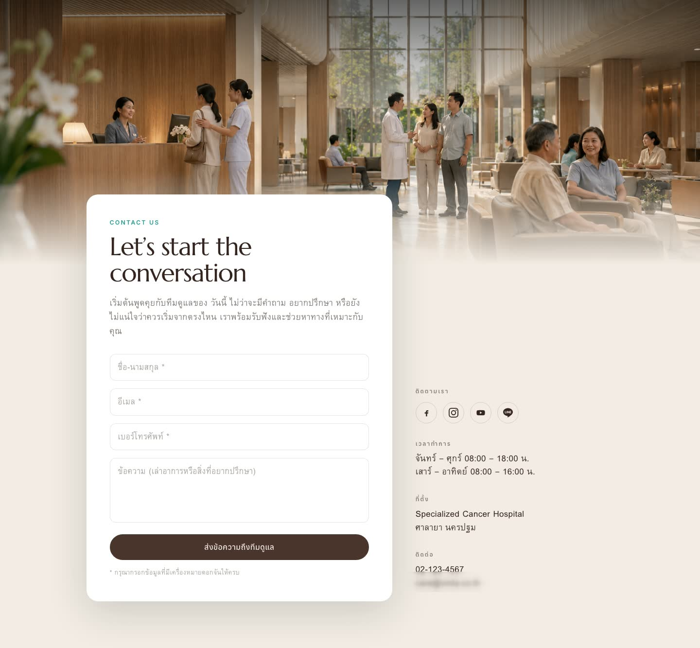
Bilingual i18n (TH / EN)
next-intl + App Router, URL prefix /th · /en, ไทยเป็นดีฟอลต์ — ข้อความอยู่ใน dictionary แยกจาก layout
Pre-opening Homepage
Hero วิดีโอ + reveal ช้า ๆ, section เล่าเรื่อง who/why/healing/services/process/FAQ ในโทนสงบและมีศักดิ์ศรี
Careers Listing
หน้าประกาศงานพร้อม badge ระดับความต้องการ (เร่งด่วน/สูง) — ดึงจาก CMS ถ้าเชื่อมแล้ว ไม่งั้นใช้ seed data
Multi-section Application Form
ฟอร์มสมัครหลายส่วน 30+ ฟิลด์ — มือถือใช้ bottom-sheet, มี date-wheel เลือกวันเกิด, ครอปรูปถ่ายในเบราว์เซอร์, ค้นหาสัญชาติ
Sanity CMS (Thai Studio)
8 content models (งาน/หมวด/แผนก/ทำเล/ใบสมัคร/ข้อความติดต่อ ฯลฯ), รองรับ i18n ระดับเอกสาร, custom input + ปุ่ม export PDF
Auto PDF Generation
render หน้าปกใบสมัครด้วย headless Chrome (ไทยเป๊ะ) แล้ว merge เรซูเม่ (PDF/รูป) เป็นไฟล์เดียวด้วย pdf-lib + ปั๊ม footer/เลขหน้า
Email Notify
แจ้งเตือน HR ทุกใบสมัคร/ข้อความติดต่อ ผ่าน Resend (เรียก REST ด้วย fetch) พร้อมแนบ PDF และ header แบรนด์
Contact Form + Chat Widget
ฟอร์มติดต่อ (เก็บ draft + แจ้งเมล) และปุ่มแชตลอย "คุยกับทีมดูแล" ที่เชื่อมช่องทางแชตของโรงพยาบาล
หน้าตา — Careers
หน้าประกาศงานที่ผู้สมัครเห็น — การ์ดตำแหน่งพร้อมป้ายความต้องการ กดสมัครแล้วเข้าสู่ฟอร์มหลายส่วน
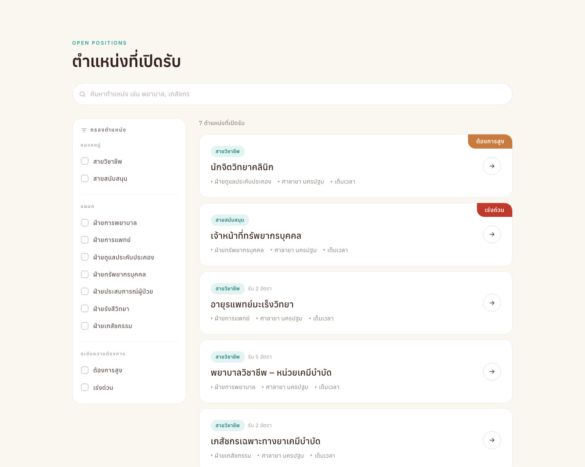
งานออกแบบ UI & Design System
ในมุม Product Designer: แปลงโจทย์ "โรงพยาบาลมะเร็งก่อนเปิด" เป็นระบบดีไซน์ที่สงบ มีศักดิ์ศรี และรองรับฟอร์มสมัครงาน 30+ ฟิลด์ 2 ภาษาได้จริง
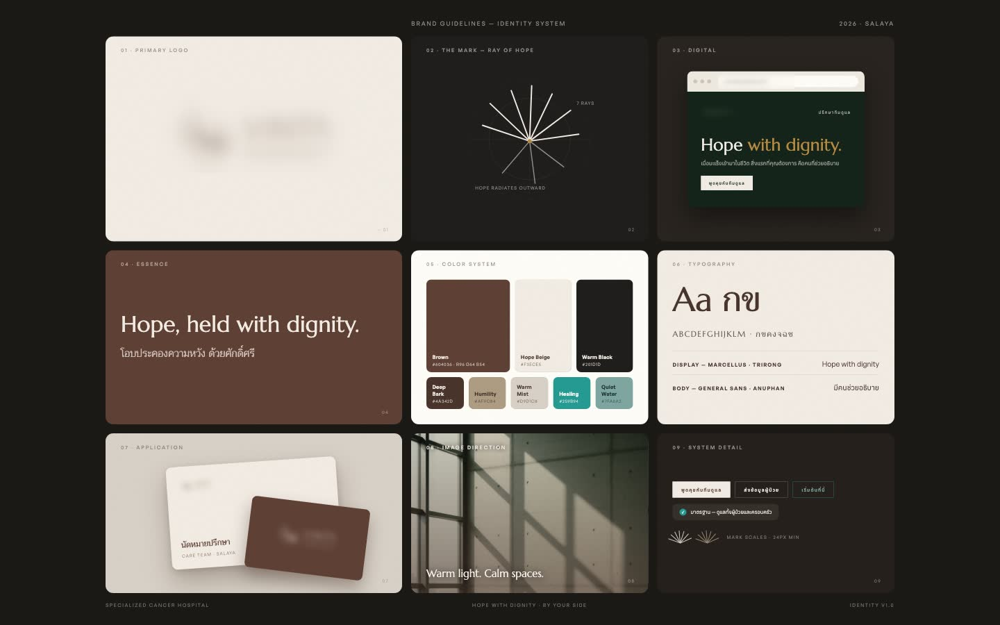
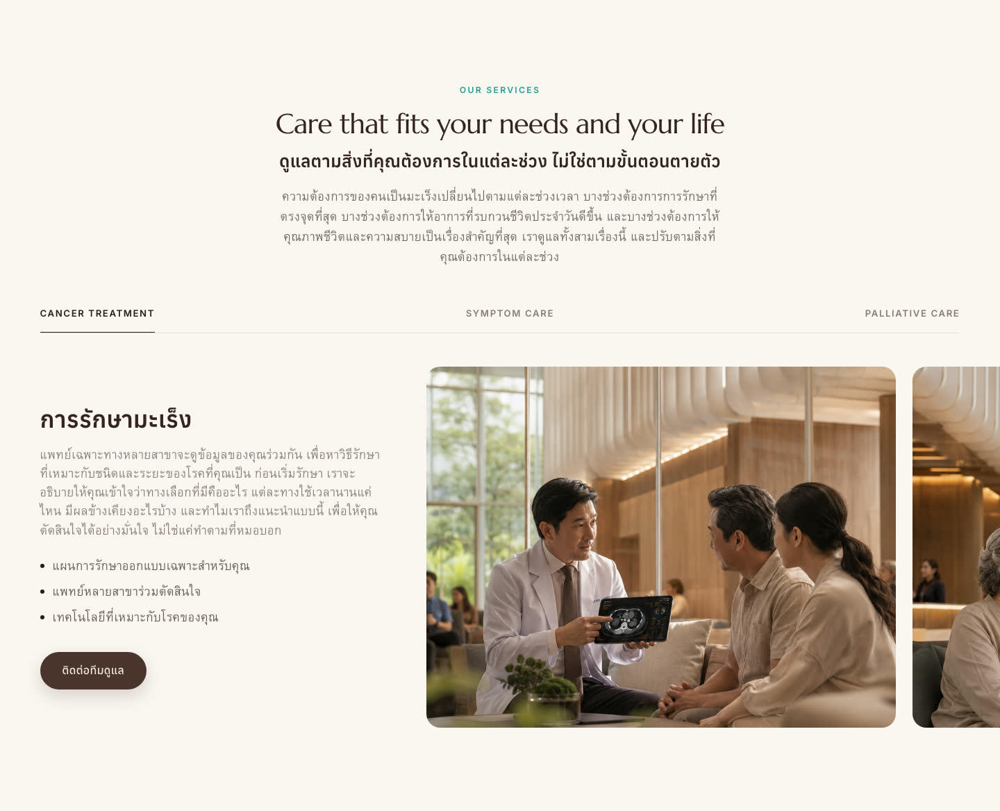
บนมือถือ ฟอร์มยาว = คนเลิกกรอกกลางคัน จึงแตกเป็น section stepper + ใช้ bottom-sheet สำหรับตัวเลือก, date-wheel เลือกวันเกิด (พ.ศ.) และครอปรูปในเบราว์เซอร์ — ผู้สมัครเห็นทีละส่วน ไม่เจอกำแพงช่องกรอก ส่วนบน ≥768 ค่อยขยายเป็น popover/2 คอลัมน์
ทุกฟิลด์มี state ครบ — default / focus (ring ทอง #AF9C84) / invalid (แดง #b4452f) แต่ใช้ :not(:placeholder-shown):invalid ให้ error โผล่หลังผู้ใช้กรอกแล้วออกจากช่อง ไม่ใช่ทันทีที่เริ่มพิมพ์ — ลดความรู้สึกโดนตำหนิ พร้อมข้อความบอกวิธีแก้เป็นภาษาไทย
จงใจไม่ใช้กากบาทแดง/ภาษาสู้รบ — ใช้ Healing Green เป็น accent เงียบ ๆ ไม่ใช่สีเตือนภัย, คุม contrast ให้ผ่าน AA บนพื้นเบจ, touch target ≥44px, :focus-visible เส้นเขียว, และ motion แบบ "ลมหายใจ" ที่เคารพ prefers-reduced-motion
ไทยใช้ 2 ฟอนต์คนละงาน — Anuphan (ไม่มีหัว เข้ากับโลโก้) สำหรับ heading/display, Garuda (มีหัว) สำหรับ body ให้อ่านต่อเนื่อง; อังกฤษใช้ Marcellus (serif) คู่กัน · เผื่อ line-height 1.28 ให้สระ/วรรณยุกต์ไทย · แยกข้อความออกจาก layout ให้ทั้ง 2 ภาษาไม่หลุดจากกัน
Hack กับปัญหา
6 โจทย์ที่ต้องคิดทางแก้เอง — ภาษาไทยบน PDF, browser บน serverless, ความปลอดภัยของ PII
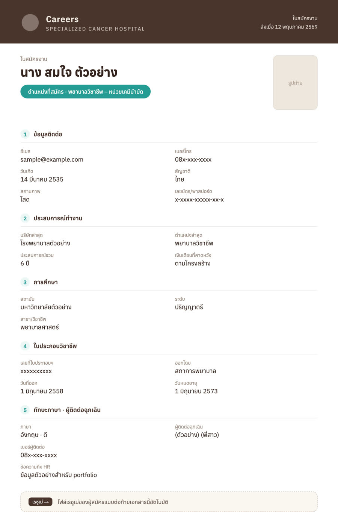
สร้าง PDF ภาษาไทยให้ตัวอักษรเป๊ะ
ฟอนต์มาตรฐานของ pdf-lib วาดภาษาไทยไม่ได้ (สระ/วรรณยุกต์เพี้ยน) แต่ HR ต้องอ่านใบสมัครไทยที่ถูกต้อง 100%
pdf-lib merge กับเรซูเม่ · ส่วน footer ที่ต้องปั๊มทุกหน้า ใช้วิธี screenshot เป็นรูป แล้ว embed กัน glyph ไทยเพี้ยนตอน stampเปิดเบราว์เซอร์บน serverless ไม่ได้ตรง ๆ
Puppeteer ต้องมี Chrome binary — บนเครื่อง dev มี Chrome อยู่แล้ว แต่บน serverless ไม่มี และ Chrome เต็มตัวใหญ่เกิน limit
VERCEL / AWS_REGION) → บน serverless โหลด @sparticuz/chromium (binary ที่ตัดให้เล็กพอ), บนเครื่อง dev ชี้ไป Chrome ที่ติดตั้งไว้ — โค้ดชุดเดียวรันได้ทั้งสอง environmentใบสมัครมี PII ห้ามหลุด public API
Sanity เอกสารที่ published อ่านได้ผ่าน public API — ถ้าเก็บใบสมัครแบบปกติ ใครก็ query เลขบัตร/เบอร์โทรผู้สมัครได้
_id = drafts.<uuid>) ซึ่ง public API มองไม่เห็น แต่ HR เห็นใน Studio · write token เป็น server-only (ไม่ขึ้นต้น NEXT_PUBLIC_) · ตรวจ input ฝั่ง server ทุกฟิลด์ก่อนบันทึกGen PDF + ส่งเมล ช้า → ผู้สมัครรอนาน
ถ้ารอ render PDF และส่งเมลให้เสร็จก่อนตอบ ผู้สมัครจะเห็น loading ค้างหลายวินาที — ประสบการณ์แย่
after() ของ Next.js — ตอบผู้สมัครว่า "สำเร็จ" ทันที หลังบันทึก แล้วค่อย generate PDF + ส่งเมลแจ้ง HR เป็นงานเบื้องหลัง (ตั้ง maxDuration = 60 เผื่องานหนัก) ผู้สมัครไม่ต้องรอเว็บต้อง live ก่อนคีย์ครบ
ตอนเริ่มยังไม่มี Sanity project / Resend key / write token — แต่ต้อง publish เว็บให้ทันเพื่อเริ่มประชาสัมพันธ์
แยกไอคอน/ภาพ ออกจากข้อความ 2 ภาษา
section ในหน้าแรกมีทั้งไอคอน รูป และข้อความ — ถ้าเก็บทุกอย่างปนกันใน dictionary จะแก้ภาษายากและ layout พังง่าย
Design Decision ที่ตั้งใจเลือก
สำหรับเว็บโรงพยาบาลมะเร็ง สิ่งที่จงใจ "ไม่ทำ" สำคัญพอ ๆ กับสิ่งที่ทำ
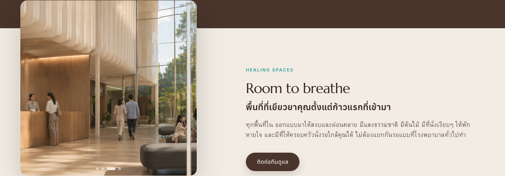
เว็บนี้ต้องลดความกลัว ไม่ใช่เพิ่ม — จึงไม่ใช้กากบาทแดง ไม่ใช้ภาษาสู้รบเรื่องมะเร็ง ไม่ทำเหมือนโรงพยาบาลเปิดเต็มระบบทั้งที่ยังก่อสร้าง และไม่เก็บข้อมูลผู้สมัครไว้ที่ที่ public เข้าถึงได้ ทุกการตัดสินใจยึดความสงบ ศักดิ์ศรี และความปลอดภัยของข้อมูลเป็นหลัก มากกว่าลูกเล่นทางการตลาด
บอกความจริง ไม่ขายฝัน
สื่อสารว่า "กำลังสร้าง" อย่างอบอุ่น ไม่ทำเหมือนเปิดแล้ว
ไม่ใช้กากบาทแดง/ภาษาสู้รบ
ความน่าเชื่อถือมาจาก typography & layout ไม่ใช่สัญลักษณ์เร่งด่วน
PII เก็บเป็น draft เท่านั้น
public API อ่านไม่ได้ · token อยู่ฝั่ง server
Motion แบบลมหายใจ
reveal ช้า นุ่ม เคารพ reduced-motion ไม่ flashy
Knowledge Domain ที่แข็งขึ้น
5 พื้นที่ความรู้ที่ระดับเราขยับขึ้นจริงจากการทำโปรเจกต์นี้
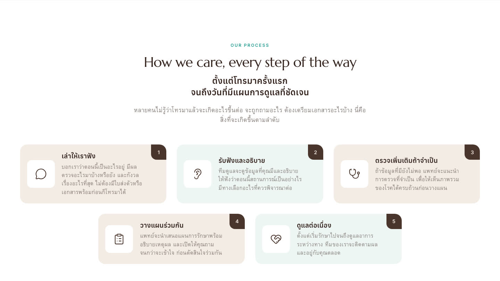
เข้าใจ next-intl บน App Router — routing/URL prefix, setRequestLocale ใน RSC, การแยก "ข้อความ" (dictionary) ออกจาก "โครงหน้า" (โค้ด) แล้ว map ไอคอน/รูปด้วย index — บทเรียน: i18n ที่ดีคือทำให้นักแปลแก้เฉพาะข้อความได้ โดยไม่ต้องแตะ layout และไม่ทำให้ทั้งสองภาษาหลุดจากกัน
ประกอบ pipeline: puppeteer render HTML→PDF (ฟอนต์ไทยเป๊ะ) + pdf-lib merge หลายไฟล์ + embed รูป/ปั๊ม footer/เลขหน้า + จัดการ dual-environment (Chrome เครื่อง vs @sparticuz/chromium บน serverless) — บทเรียน: การสร้างเอกสารคุณภาพระดับพร้อมส่ง ไม่ใช่ของลึกลับ ถ้ารู้จักจุดแข็งของแต่ละเครื่องมือแล้วเอามาต่อกัน
โมเดล content 8 ชนิดใน Sanity (งาน/หมวด/แผนก/ทำเล/ใบสมัคร/ข้อความ ฯลฯ), แยก draft vs published, ทำ i18n ระดับเอกสาร, custom Studio input + ปุ่ม export — บทเรียน: งานหลังบ้านที่ดีคือส่งมอบ "ระบบที่ HR ดูแลเองได้" ไม่ใช่หน้าจอที่ต้องกลับมาหา dev ทุกครั้งที่จะแก้ข้อความ
วางระบบให้ PII ปลอดภัย: เก็บเป็น draft ที่ public API อ่านไม่ได้, แยก server-only token ออกจาก client, validate ทุก input ฝั่ง server, ใช้ after() ทำงานหนักเบื้องหลังโดยไม่หน่วงผู้ใช้ — บทเรียน: กับข้อมูลอ่อนไหว "ที่เก็บ" และ "ใครอ่านได้" ต้องออกแบบมาตั้งแต่แรก ไม่ใช่มาแปะทีหลัง
แปลง mood & tone (แสง–น้ำ–ร่มเงา, ศักดิ์ศรี) เป็น UI จริง — คุมโทน copy ให้ปลอบประคองไม่กดดัน, เลี่ยงสัญลักษณ์เร่งด่วน, ทำ contrast ให้ผ่านบนพื้นเบจ/น้ำตาล, motion แบบลมหายใจที่เคารพ reduced-motion — บทเรียน: สำหรับผู้ป่วยและครอบครัว "ความสงบและความชัดเจน" คือฟีเจอร์ ไม่ใช่การตกแต่ง